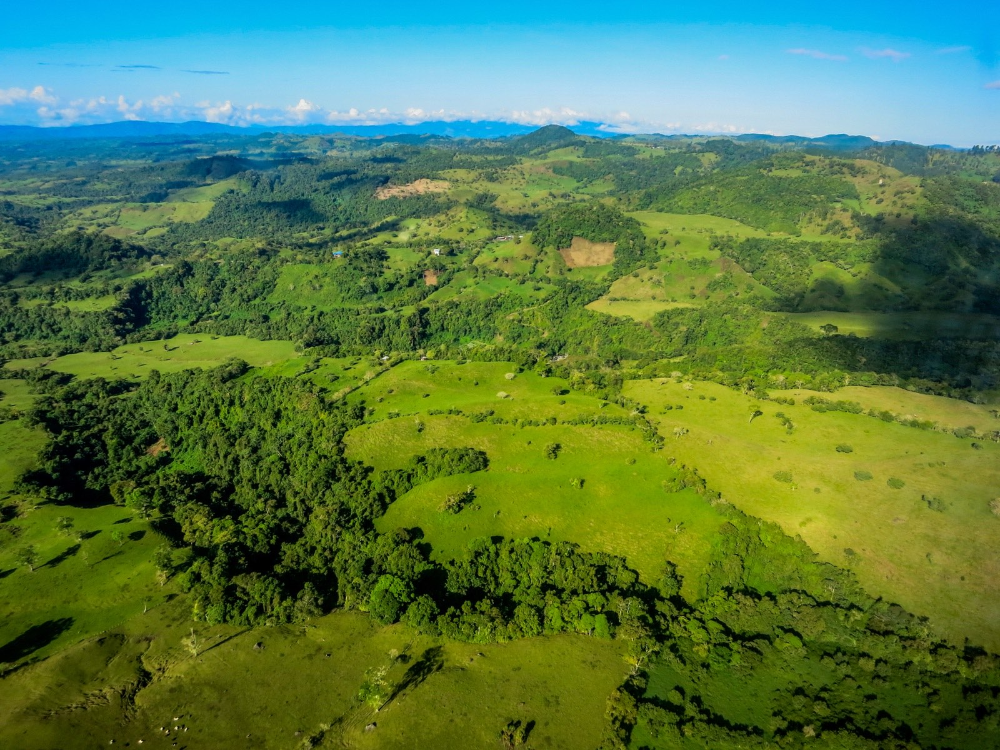
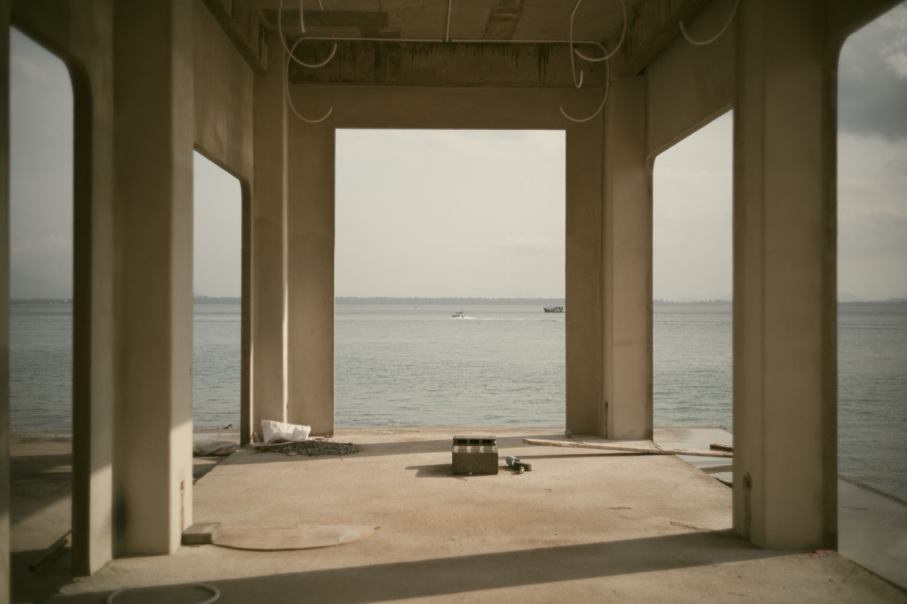
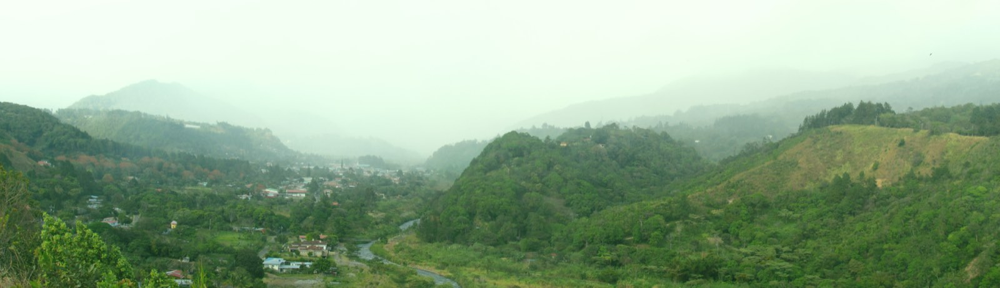

Costo de Construir una Casa en Panamá
Precios reales de 2026 basados en cotizaciones actuales de proveedores y presupuestos de constructores en Pedasí, Boquete, Volcán y Bocas del Toro. Tablas de costo por m² por región, desglose completo para tres modelos de referencia, costos blandos y todo lo que nadie le menciona antes de firmar.
La mayoría de la información que circula en internet sobre costos de construcción en Panamá tiene tres o cuatro años de antigüedad, fue escrita por alguien que nunca ha construido aquí, o las dos cosas al mismo tiempo. Esta guía es diferente. Somos una constructora de casas personalizadas activa en los cuatro mercados principales para compradores extranjeros: Pedasí, Boquete, Volcán y Bocas del Toro. Los números que aparecen a continuación provienen de cotizaciones reales de proveedores, presupuestos de contratistas y los proyectos que estamos costeando ahora mismo, no de una obra que terminó hace tres años. Actualizamos estos datos trimestralmente como parte del Sora Build Index.
Si está tratando de determinar si construir en Panamá es viable para su presupuesto, la respuesta corta es: una casa de 200 m² (2,150 pies cuadrados) lista para habitar en nuestro nivel intermedio cuesta $280,000–$345,000 más terreno. La respuesta larga, qué incluye ese número, qué está detrás de él, y cómo lo mueven la región y el nivel de acabado, es lo que llena el resto de este artículo.
En resumen
- Cuenta con $850 a $1,400 por m² para una casa bien construida. Si te ofrecen menos de $800, pregunta qué se está omitiendo.
- La región cambia el precio más que el diseño. Construir en Bocas del Toro cuesta cerca de un 40% más que en Coronado, y casi todo es transporte.
- El terreno no es el costo principal. Los permisos, la conexión de servicios y los honorarios suman entre 18% y 25% sobre el precio de construcción.
- Verifica siempre que el terreno sea titulado. El Derecho de Posesión no es propiedad y no se puede hipotecar.
- La obra gris es casi la mitad del presupuesto. Los acabados son donde tu decisión mueve más dinero.
- Un proyecto típico toma de 12 a 20 meses desde el diseño hasta la entrega de llaves.
Por qué los costos varían tanto, y por qué la mayoría de la información en línea está equivocada
Cuando alguien busca "cuánto cuesta construir en Panamá" y encuentra un número como "$600 por metro cuadrado," ese número puede ser real para un proyecto específico en una condición específica. El problema es que no dice en qué año, en qué región, con qué nivel de acabado, si incluye arquitecto, permisos, conexiones de servicios, dirección de obra y reserva de contingencia, o si es solo la mano de obra y materiales básicos de la estructura.
La construcción en Panamá ha tenido una inflación de entre 8 y 10% anual desde 2024, mayor que en Estados Unidos y similar a Costa Rica. Un precio de 2022 o 2023 puede estar hasta 20–30% por debajo del costo real hoy. Y los costos varían significativamente según la región: construir en Bocas del Toro cuesta 25–30% más que en Volcán, principalmente por el transporte de materiales al archipiélago.
Esta guía cita siempre costos completos "llave en mano": lo que se necesita para que la casa esté lista para ocupar, incluyendo estructura, acabados, instalaciones, dirección de obra, permisos y conexiones de servicios. Lo que excluye es el terreno, los muebles y los gastos de cierre legal.
Costos por región, tablas de $/m² por mercado y nivel
Tres niveles de acabado estructuran toda conversación de presupuesto en SORA:
- Esencial: construcción limpia, duradera y bien ejecutada con acabados funcionales. Cerámica local, gabinetes pintados o en madera simple, accesorios de gama media. El nivel correcto si el objetivo es optimizar el costo sin sacrificar calidad estructural.
- Sora: nuestro estándar. Acabados importados usados selectivamente (cocina, baño principal), materiales locales de calidad en el resto de la casa. Aquí aterrizan el 70% de nuestros compradores. La mejor relación precio-calidad de la línea.
- Firma: lujo. Piedra importada, carpintería a medida, accesorios de diseñador, integración de domótica, acabados exteriores premium. Para compradores que buscan una casa de revista.
Costo de construcción por m² en 2026, por región y nivel
| Región | Esencial | Sora | Firma |
|---|---|---|---|
| Pedasí (costa Azuero) | $950/m² | $1,150/m² | $1,300/m²+ |
| Playa Venao (surf Azuero) | $980/m² | $1,200/m² | $1,350/m²+ |
| Boquete (montaña Chiriquí) | $920/m² | $1,100/m² | $1,250/m²+ |
| Volcán (alta montaña Chiriquí) | $890/m² | $1,050/m² | $1,200/m²+ |
| Bocas del Toro (archipiélago) | $1,150/m² | $1,350/m² | $1,500/m²+ |
| Ciudad de Panamá (urbano) | $820/m² | $1,000/m² | $1,200/m²+ |
Para convertir metros cuadrados a pies cuadrados, multiplique por 10.76. Una casa de 200 m² equivale a 2,150 pies cuadrados; 250 m² son 2,690 pies cuadrados.
Por qué Bocas del Toro es el mercado más caro
La diferencia de costo en Bocas del Toro respecto a las otras regiones tiene tres causas concretas. Primero, los materiales deben transportarse en ferry desde Almirante o Changuinola, lo que añade entre un 15 y 25% al costo de materiales entregados en isla. Segundo, los oficios especializados (electricistas, plomeros, carpinteros de acabados) cobran sobrecargos de traslado para trabajar en el archipiélago. Tercero, los terrenos isleños frecuentemente requieren cimentaciones sobre pilotes o sistemas de drenaje más complejos que en tierra firme.
Para un proyecto de vivienda vacacional o de alquiler en Bocas, el costo adicional puede justificarse dado el potencial de renta turística. Para residencia primaria a largo plazo, Boquete o Pedasí suelen ofrecer mejor valor.
Por qué Pedasí cuesta más que Boquete
Pedasí tiene costos entre un 5 y 8% más altos que Boquete por tres razones: la construcción en ambiente marino requiere varilla con recubrimiento epoxi y herrajes resistentes a la sal (3–5% de sobrecosto), los materiales transportados desde la Ciudad de Panamá llegan con un 8–12% más de costo al Azuero que a Chiriquí, y los oficios especializados cobran un recargo de traslado para trabajar en una zona más remota.
Los tres niveles de acabado, desglose de precios con un caso real
Los números abstractos de $/m² son útiles para comparar, pero no dicen qué casa está construyendo. Aquí está el desglose completo de nuestra Casa Bahía en Pedasí, el modelo más común en nuestra cartera, para que pueda ver cada línea de costo.
Casa Bahía · 180 m² · Pedasí costero
Tres dormitorios, dos baños, cocina-sala-comedor abierto, terraza cubierta con vista al mar. Diseñada para parejas y jubilados: planta eficiente, mantenimiento bajo.
| Rubro | Esencial | Sora | Firma |
|---|---|---|---|
| Construcción (180 m² × $/m²) | $171,000 | $207,000 | $234,000 |
| Planos arquitectónicos + ingeniería (8%) | $13,680 | $16,560 | $18,720 |
| Permisos MIVIOT + municipal (1.5%) | $2,565 | $3,105 | $3,510 |
| Conexiones: agua + luz + fosa séptica | $12,000 | $14,000 | $18,000 |
| Dirección de obra (10%) | $17,100 | $20,700 | $23,400 |
| Contingencia / garantía (3%) | $5,130 | $6,210 | $7,020 |
| Costo total llave en mano (sin terreno) | ~$221,500 | ~$267,500 | ~$304,500 |
| Precio SORA al público | $260,000 | $315,000 | $360,000 |
El terreno para una Casa Bahía en Pedasí cuesta entre $35,000 y $120,000 dependiendo de la vista, el tamaño del lote y la distancia al centro. Total incluyendo terreno: $295,000–$480,000.
Lo que incluye el precio SORA
Estructura completa, acabados de piso a techo según el nivel elegido, cocina incluyendo gabinetes y mesones, baños con accesorios, puertas interiores, pintura exterior e interior, terraza cubierta, jardín perimetral básico, instalaciones eléctricas y sanitarias completas, conexiones de servicios, y doce meses de garantía post-entrega.
Lo que no incluye el precio base
Terreno, muebles, electrodomésticos, cortinas y persianas, piscina, cocina exterior, parqueo techado adicional, o generador eléctrico. Todos estos son opciones que cotizamos por separado según requerimiento del cliente.

Costos que nadie menciona, lo que sorprende a los compradores extranjeros
Más allá de los porcentajes de la tabla anterior, hay varios costos que frecuentemente toman por sorpresa a compradores extranjeros que no conocen el mercado panameño. Planifíquelos como parte de su presupuesto total desde el principio.
Conexiones de servicios: el costo más subestimado
El agua, la luz y la fosa séptica varían enormemente según el terreno:
- Agua: $2,000–$5,000 si el lote está conectado a la red municipal del IDAAN. $4,000–$12,000 si se necesita perforar un pozo, lo que es el caso de la mayoría de los lotes rurales en Pedasí, Volcán y fincas. El agua de pozo en estas zonas es generalmente buena y potable a 20–40 metros de profundidad.
- Electricidad: $3,000–$8,000 para extender la red de la distribuidora local si el lote está dentro de 200 metros del tendido existente. $10,000–$25,000 para extensiones más largas. Algunos lotes en Pedasí rural y Bocas son más eficientes con energía solar fuera de red.
- Fosa séptica: $5,000–$8,000 para un sistema séptico bien diseñado con campo de absorción. $8,000–$12,000 para un biodigestor (sistema de ciclo cerrado que genera descarga limpia, adecuado para lotes costeros ambientalmente sensibles).
Costos legales y de cierre
| Seguro de título | 0.4–0.8% del precio de compra · First American Title o Stewart Title |
| Impuesto de transferencia | 2% del precio registrado en escritura · lo paga el comprador |
| Honorarios de notaría + Registro Público | $1,500–$2,500 |
| Abogado de cierre inmobiliario | $1,500–$2,500 |
| Abogado de migración (si aplica para Visa QIV u otra) | $3,500–$5,500 |
| Paquete de muebles y electrodomésticos (opcional) | $25,000–$80,000 según nivel |
| Cortinas, persianas y jardinería instalada | $8,000–$25,000 |
En total: planifique un 5–7% adicional sobre el costo de construcción para cubrir cierre, abogados y los rubros blandos anteriores. Para una Casa Bahía Sora a $315,000, eso representa entre $15,000 y $22,000 adicionales. Presupueste $335,000 todo incluido si no quiere sorpresas.
Inflación de construcción: el factor tiempo
Los costos de construcción en Panamá han subido aproximadamente 8–10% anual desde 2024. Si está presupuestando una obra que comenzará en más de doce meses, agregue 10% al precio actual. Si firma un contrato con SORA hoy, el precio se fija en el momento de la firma y no cambia durante la construcción, independientemente de la inflación de materiales o mano de obra.

Comprar terreno como extranjero, titulado vs Derecho de Posesión
Esta es la pregunta que más confusión genera entre compradores extranjeros y que más importa aclarar antes de cualquier otra decisión.
Terreno titulado (Finca)
Un terreno titulado está inscrito en el Registro Público de Panamá con un número de Finca único. Puede comprarse, venderse, hipotecarse y heredarse con plena seguridad jurídica. El propietario tiene título de propiedad pleno. Para un comprador extranjero, un terreno titulado ofrece exactamente los mismos derechos que tendría un ciudadano panameño. No hay restricciones de propiedad por ser extranjero en terrenos titulados fuera de zonas de frontera o costas designadas.
Para la Visa de Inversionista Calificado (QIV), el financiamiento bancario en Panamá, y cualquier tipo de garantía, el terreno debe ser titulado sin excepción.
Derecho de Posesión (ROP)
Un terreno de Derecho de Posesión no tiene título formal. Se transfiere mediante un acuerdo de posesión (carta de traspaso) y el "propietario" mantiene el derecho de poseer y usar el terreno, pero no tiene título inscrito en el Registro Público. Los terrenos ROP son comunes en áreas rurales, costeras y dentro de zonas de reserva del Estado.
Los terrenos ROP pueden ser más baratos y tener ubicaciones espectaculares. También tienen riesgos reales: no califican para financiamiento, no califican para visas de inversión, y en algunos casos pueden ser reclamados por el Estado si están dentro de zonas de reserva o si hay conflictos de posesión históricos.
Qué verificar antes de comprar cualquier terreno en Panamá
- Número de Finca y Tomo/Folio: confirme que existen en el Registro Público.
- Estudio de títulos: su abogado debe rastrear la cadena de transferencias hasta el título original para identificar gravámenes, hipotecas o derechos de terceros.
- Confronte el plano catastral: verifique que el lote físico coincide con el plano en el Registro. Los linderos en papel no siempre coinciden con los postes en tierra.
- Restricciones de uso: verifique si el terreno está dentro de zona de protección costera (50 metros de la pleamar), zona de amortiguamiento de reserva, o área de manejo especial del ANAM.
- Deudas de impuesto inmobiliario: los impuestos pendientes siguen al bien, no al dueño anterior. Solicite certificado de paz y salvo del Ministerio de Economía.
SORA trabaja únicamente con terrenos titulados y realiza la debida diligencia de título como parte estándar del proceso de construcción. No vendemos ni construimos sobre terrenos ROP.

El proceso SORA, cómo funciona el precio fijo
El problema más común que escuchamos de personas que han tenido malas experiencias construyendo en Panamá es siempre el mismo: el precio cambió durante la obra. Empezaron con un presupuesto, terminaron pagando 30 o 40% más, y nadie pudo explicarles claramente por qué.
El modelo SORA está diseñado específicamente para eliminar ese problema.
Cómo funciona
Paso 1: Diseño y especificaciones. Antes de firmar cualquier contrato, se definen completamente el tamaño de la casa, el modelo (estándar o personalizado), la región, el nivel de acabado y todos los materiales específicos. La propuesta de precio incluye un libro de especificaciones que describe cada material por marca, modelo y calidad. No hay ambigüedad sobre qué se está comprando.
Paso 2: Contrato de precio fijo. El contrato establece un precio total y un cronograma de pagos ligado al avance de obra. El precio no cambia durante la construcción a menos que el cliente solicite cambios de alcance (upgrades, adiciones, modificaciones al diseño). Si el comprador no solicita cambios, el precio final es el precio firmado.
Paso 3: Desembolsos por avance. Los pagos están estructurados en hitos: cimentación, estructura, techo, acabados gruesos, acabados finos, entrega. El cliente no paga por adelantado la totalidad de la obra. El cronograma de desembolsos es parte del contrato.
Paso 4: Reportes semanales. Cada semana el comprador recibe fotos, video y un reporte de avance con el porcentaje completado versus el cronograma. Para compradores que viven fuera de Panamá, esto es la columna vertebral de la tranquilidad durante la construcción.
Paso 5: Inspección y entrega. Antes de la entrega de llaves, el comprador realiza (en persona o con un inspector de confianza) un recorrido de inspección. Todos los puntos de lista son resueltos por SORA antes de considerar la entrega completa.
Paso 6: Garantía de 12 meses. Cubre defectos de construcción, instalaciones y acabados. Los reclamos de garantía se procesan en un plazo máximo de 15 días hábiles. Al cumplirse doce meses, se devuelve el saldo no utilizado de la reserva de contingencia.
Tiempo total del proceso
Desde la primera conversación hasta las llaves en mano: nueve a doce meses para la construcción, más treinta a cuarenta y cinco días de planos y permisos previos a la obra. En total, cuente con doce meses desde que firma la opción de terreno hasta la mudanza.
Descargue la Guía de Costos SORA. Incluye tablas por región, niveles de acabado y la hoja de cálculo de presupuesto.
La guía tiene 28 páginas con los mismos datos de esta página en formato descargable, más una hoja de trabajo para calcular su presupuesto completo incluyendo terreno, costos blandos y cierre.
Fuentes y cómo verificamos estas cifras
Verificado el 12 de agosto de 2026. Si vas a tomar una decisión con estos números, confírmalos antes: los precios de materiales en Panamá se mueven varias veces al año.
- Costos de construcción: datos propios de nuestros proyectos en Chiriquí y la península de Azuero, actualizados en 2026.
- Precios de materiales: cotizaciones de proveedores en David y Ciudad de Panamá.
- Permisos y trámites: tarifas municipales y del MIVIOT vigentes. Varían por municipio, así que confirma en el tuyo.
- Estado del título: se verifica en el Registro Público. Es el único dato que nunca debes aceptar de palabra.
Dos advertencias honestas. Primero, cualquier precio por m² es un promedio, y tu terreno puede cambiarlo mucho: una pendiente fuerte, mal acceso o suelo blando pueden sumar $15,000 o más solo en movimiento de tierra y fundaciones. Segundo, si comparas presupuestos, revisa que todos incluyan lo mismo. La diferencia entre dos cotizaciones casi nunca es el precio del metro cuadrado, sino qué quedó fuera de la lista.
Preguntas frecuentes
¿Cuánto cuesta construir una casa en Panamá por metro cuadrado en 2026?
En 2026, construir una casa en Panamá cuesta entre $870 y $1,500 por metro cuadrado dependiendo de la región y el nivel de acabado. Zonas costeras como Pedasí y Bocas del Toro están en la parte alta del rango por sobrecostos de materiales y mano de obra especializada. Zonas de montaña como Volcán tienen los costos más bajos. Todos estos precios son llave en mano: incluyen estructura, acabados, instalaciones, dirección de obra, permisos y conexiones. Excluyen terreno y muebles.
¿Puede un extranjero construir una casa en Panamá?
Sí, sin restricciones. Los extranjeros tienen exactamente los mismos derechos de propiedad que los panameños sobre terrenos titulados. Pueden comprar terreno, contratar un constructor y registrar la propiedad a su nombre. La única limitación aplica a terrenos de Derechos de Posesión (ROP) en zonas costeras o de frontera designadas, donde existen restricciones específicas para no nacionales. Trabajando con terreno titulado, no hay ninguna restricción.
¿Cuánto tiempo tarda construir una casa en Panamá?
Una construcción estándar SORA tarda nueve meses desde la firma del contrato hasta la entrega de llaves. Cimentación en los meses 1 y 2; estructura y techo en los meses 3 y 4; acabados gruesos y finos en los meses 5 a 7; inspección final y entrega en los meses 8 y 9. Las obras que inician en temporada seca (diciembre a abril) generalmente cumplen el cronograma. Las que inician en temporada lluviosa pueden añadir 30 a 60 días, principalmente durante cimentación y techumbre. Sume 30–45 días de planos y permisos previos a la obra.
¿Qué es terreno titulado y por qué importa?
Un terreno titulado (Finca) está inscrito en el Registro Público con un número de finca único. Es el único tipo de terreno que puede hipotecarse, que califica para la Visa de Inversionista Calificado (QIV), y que ofrece plena seguridad jurídica al comprador extranjero. Los terrenos de Derecho de Posesión (ROP) no están inscritos en el Registro, no califican para financiamiento ni para visas de inversión, y tienen riesgos legales reales en casos de reclamación por terceros o por el Estado.
¿Cuáles son los costos ocultos al construir en Panamá?
Los que más sorprenden: conexiones de agua, luz y fosa séptica ($9,000–$25,000 según el terreno), honorarios legales y de notaría ($3,000–$5,000), impuesto de transferencia (2% del valor registrado en escritura), seguro de título (0.4–0.8%), y el paquete de muebles y electrodomésticos si se desea entrega amoblada ($25,000–$80,000). Planifique un 5–7% adicional sobre el costo de construcción llave en mano para cubrir todos estos rubros.
¿Cómo funciona el precio fijo de SORA?
El contrato SORA establece un precio total antes de que comience la obra, con especificaciones completas de materiales y acabados. El precio no cambia durante la construcción por variaciones en costos de materiales o mano de obra. Los únicos ajustes posibles son cambios de alcance solicitados explícitamente por el comprador (upgrades, adiciones, modificaciones al diseño) o condiciones extraordinarias del terreno documentadas antes de la firma. Al cierre de los doce meses de garantía, el saldo no utilizado de la reserva de contingencia se devuelve al comprador.